Robótica
Clase 18
Semana 24 - 15/10/2025
Point-follower con evasión de obstáculos
\[ \require{color} \]
Definición del problema
- Sea una posición y orientación arbitraria del robot \(\textcolor{Maroon}{\boldsymbol{P}(t)}\) en el tiempo \(t\)
- Sea una posición objetivo \(\textcolor{Blue}{\boldsymbol{G}}\) en el tiempo incial \(t_0\)
- Se debe encontrar una ley que mediante una serie de controles \(\textcolor{ForestGreen}{\nu(t)}\) y \(\textcolor{Orange}{\omega(t)}\) conduzca el robot del punto inicial \(\textcolor{Maroon}{\boldsymbol{P}(t_0)}\) al punto objetivo \(\textcolor{Blue}{\boldsymbol{G}}\) mientras se evaden los obstáculos
Point-follower con evasión de obstáculos
Enfoque: campos potenciales (existen muchos otros)
- Basado en conceptos físicos: carga eléctrica, potencial eléctrico y ppio. de superposición
- Dos alternativas:
- Off-line (con memoria o mapa)
On-line (dinámico sin memoria)
Revisión conceptos matemáticos
Función \(\boldsymbol{\mathcal{f}}: \mathbb{R} \to \mathbb{R}\) asocia a cada punto un valor escalar
Derivada de la función \(d \boldsymbol{\mathcal{f}}\) es la pendiente de la recta tangente en un punto \(p\) que indica la tasa de cambio de la función en dicho punto
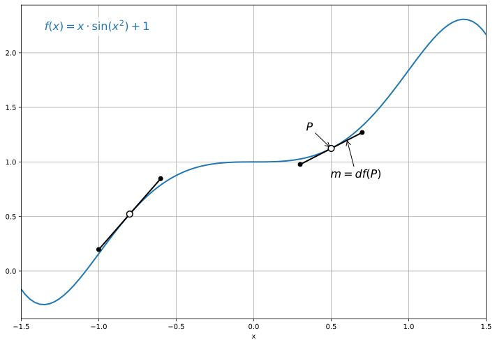
Revisión conceptos matemáticos
Campo escalar: una función que a cada punto en una región del espacio le asocia un valor escalar \[\boldsymbol{\mathcal{f}} : \mathbb{R}^{n} \to \mathbb{R}\]
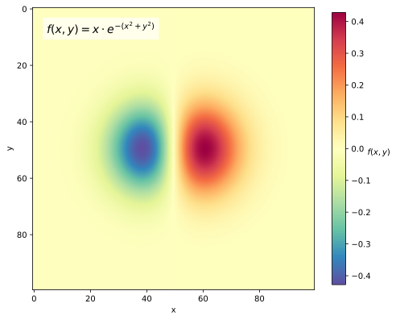
Campo vectorial: una función que a cada punto en una región del espacio le asocia un valor vectorial \[\boldsymbol{\mathcal{f}} : \mathbb{R}^{n} \to \mathbb{R}^{n}\]
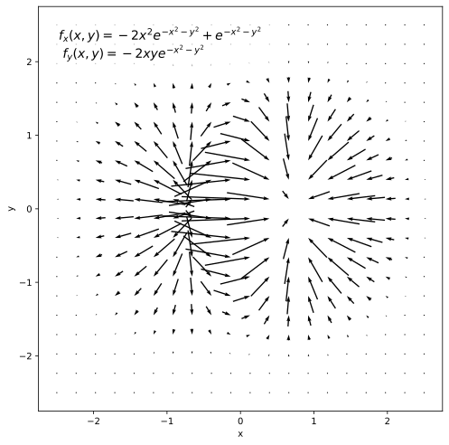
Revisión conceptos matemáticos
Campo escalar: una función que a cada punto en una región del espacio le asocia un valor escalar \[\boldsymbol{\mathcal{f}} : \mathbb{R}^{n} \to \mathbb{R}\]
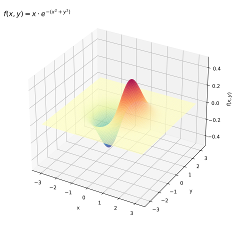
Campo vectorial: una función que a cada punto en una región del espacio le asocia un valor vectorial \[\boldsymbol{\mathcal{f}} : \mathbb{R}^{n} \to \mathbb{R}^{n}\]
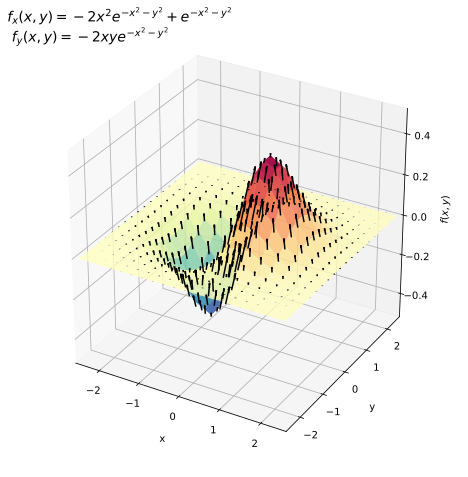
Revisión conceptos matemáticos
Para una función escalar \(\boldsymbol{\mathcal{f}} : \mathbb{R}^{n} \to \mathbb{R}\) el gradiente \(\nabla \boldsymbol{\mathcal{f}} : \mathbb{R}^{n} \to \mathbb{R}^n\) es tal que evaluado en un punto \(\boldsymbol{p} = (x_1, x_2, \dots , x_n)\) indica la dirección en la que la función \(\boldsymbol{\mathcal{f}}\) aumenta más rápidamente desde \(p\), y su módulo representa la tasa de variación de \(\boldsymbol{\mathcal{f}}\) en la dirección del vector gradiente.
\[ \nabla \mathcal{f}(\boldsymbol{p}) = \begin{bmatrix} \frac{\partial \mathcal{f}}{\partial x_1} (\boldsymbol{p}) \\ \frac{\partial \mathcal{f}}{\partial x_2} (\boldsymbol{p}) \\ \vdots\\ \frac{\partial \mathcal{f}}{\partial x_n} (\boldsymbol{p}) \\ \end{bmatrix} \]
Revisión conceptos matemáticos
- Campo escalar \(f(x,y)\)
- Las flechas representan el gradiente \(\nabla f(x,y)\)
- Apuntan en la dirección de mayor crecimiento
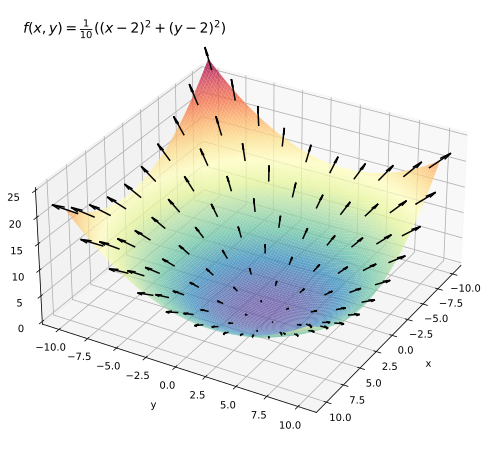
Revisión conceptos físicos
Campo eléctrico de una carga puntual
- Sea en el punto de origen \(\mathcal{O}\) una carga \(q\) y el punto \(P\) donde se desea determinar el campo
- Sea el vector distancia \(\vec{\boldsymbol{r}} = \overrightarrow{\mathcal{O} P}\), y el vector unitario asociado \(\hat{\boldsymbol{r}} = \vec{\boldsymbol{r}} / r\) donde \(r = \lVert\vec{\boldsymbol{r}}\rVert\)
- La dirección y magnitud del campo \(\vec{\boldsymbol{E}} (q, \vec{\boldsymbol{r}})\) se define como
\[ \vec{\boldsymbol{E}} = \underbrace{\frac{1}{4 \pi \epsilon_0}}_{\textrm{constante}} \cdot \overbrace{\frac{q}{r^2}}^{\textrm{magnitud}} \cdot \underbrace{\hat{\boldsymbol {r}}}_{\textrm{dirección}} \]
- La magnitud es proporcional al tamaño de la carga \(q\) e inversamente proporcional al cuadrado de la distancia (\(r^2\))
Revisión conceptos físicos
Campo eléctrico de una carga puntual
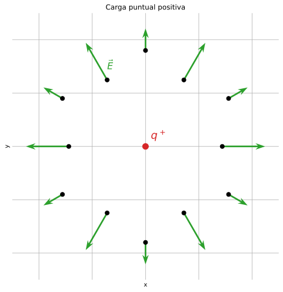
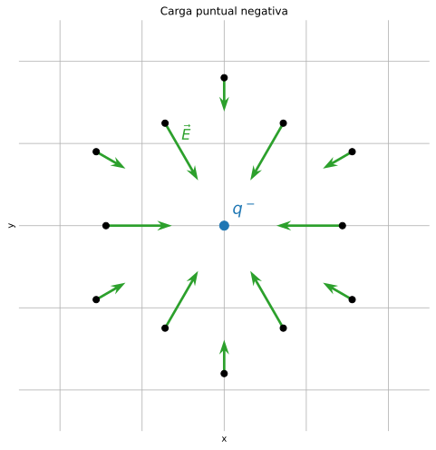
Revisión conceptos físicos
Principio de superposición de campos eléctricos
- El efecto de múltiples cargas es la suma vectorial de los campos debido a cada carga puntual
\[ \vec{\boldsymbol{E}_T} = \vec{\boldsymbol{E}_1} + \vec{\boldsymbol{E}_2} + \vec{\boldsymbol{E}_3} + \dots \]
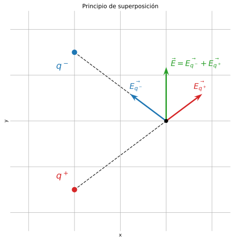
Revisión conceptos físicos
Línea de campo eléctrico
- Curva imaginaria tangente en cualquier punto a la dirección del vector \(\vec{\boldsymbol{E}}\)
- Se alejan de las cargas positivas y van hacia las cargas negativas
- Nunca se cruzan
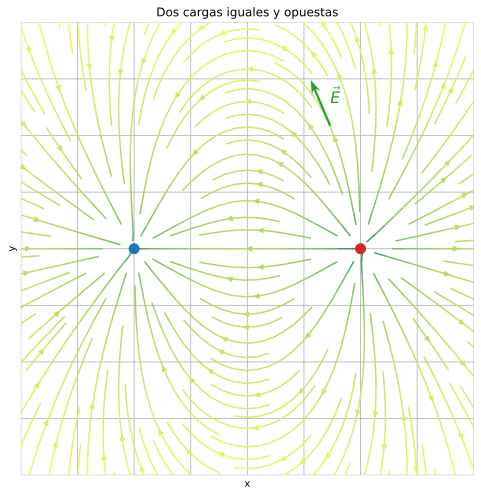
Revisión conceptos físicos
Línea de campo eléctrico
- Curva imaginaria tangente en cualquier punto a la dirección del vector \(\vec{\boldsymbol{E}}\)
- Se alejan de las cargas positivas y van hacia las cargas negativas
- Nunca se cruzan
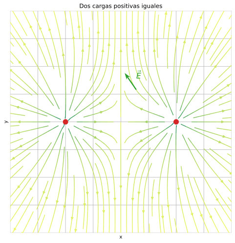
Revisión conceptos físicos
Energía potencial eléctrica
- Para multiples cargas puntuales, la energía potencial asociada a la carga de prueba \(q_0\) es la suma algebraica
\[ U = \frac{q_0}{4 \pi \epsilon_0} \sum_{i} \frac{q_i}{r_i} \]
donde \(r_i\) es la distancia entre la carga \(q_0\) y \(q_1\)
Revisión conceptos físicos
Potencial eléctrico
- Se define el potencial \(V\) como la energía potencial \(U\) por unidad de carga
\[ V = \frac{U}{q_0} \]
- Para calcular el potencial debido a un conjunto de cargas puntuales:
\[ V = \frac{1}{4 \pi \epsilon_0} \sum_{i} \frac{q_i}{r_i} \]
Revisión conceptos físicos
Superficies equipotenciales
- Superficie en la cual el potencial eléctrico \(V\) es el mismo
- Se asemejan a curvas de nivel en un mapa topográfico
Las líneas de campo y las superficies equipotenciales siempre son perpendiculares entre sí
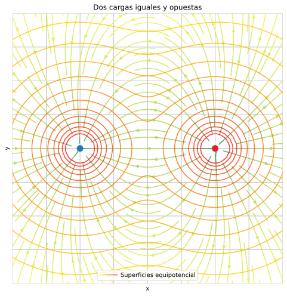
Revisión conceptos físicos
Superficies equipotenciales
- Superficie en la cual el potencial eléctrico \(V\) es el mismo
- Se asemejan a curvas de nivel en un mapa topográfico
Las líneas de campo y las superficies equipotenciales siempre son perpendiculares entre sí
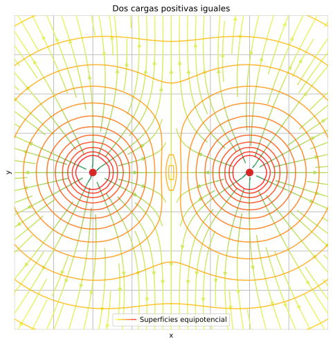
Revisión conceptos físicos
Gradiente potencial
- El campo \(\vec{\boldsymbol{E}}\) es igual al gradiente negativo de \(V\)
\[ \vec{\boldsymbol{E}} = - \vec{\nabla} V \]
- Para el caso de un campo tri-dimensional, donde \(\vec{\boldsymbol{E}} = \hat{\boldsymbol{\mathcal{i}}} E_x + \hat{\boldsymbol{\mathcal{j}}} E_y + \hat{\boldsymbol{\mathcal{k}}} E_z\):
\[ \vec{\boldsymbol{E}} = \begin{bmatrix} E_x \\ E_y \\ E_z \end{bmatrix} = \begin{bmatrix} \frac{\partial V}{\partial x}\\ \frac{\partial V}{\partial y} \\ \frac{\partial V}{\partial z} \end{bmatrix} \]
Campos potenciales artificiales
Construir un campo potencial \(\mathcal{C}\) donde el robot sea representado como una carga \(q^+\)
- Atraído por el objetivo \(\boldsymbol{G}\) (\({q_G}^-\))
- Repelido por la región del obstáculo \(\mathcal{C}_O\) (\({q_O}^+\))
- Por ppio. de superposición el campo total \(U\) será la suma de los potenciales de atracción y repulsión
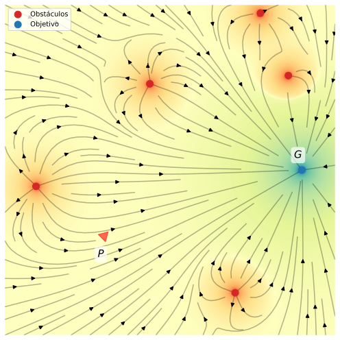
Campos potenciales artificiales
- El gradiente negativo \(-\vec{\nabla} U(\boldsymbol{P})\) indicará la dirección de movimiento más prometedora

Potencial atractivo
Objetivo: guiar al robot al punto objetivo \(\boldsymbol{G}\)
- Sea la distancia entre el robot en \(\boldsymbol{P}\) y el punto objetivo \(\boldsymbol{G}\):
\[ \boldsymbol{e}(\boldsymbol{P}) = \begin{bmatrix} e_x \\ e_y \\ \end{bmatrix} = \boldsymbol{P} - \boldsymbol{G} = \begin{bmatrix} x_\boldsymbol{P} - x_\boldsymbol{G} \\ y_\boldsymbol{P} - y_\boldsymbol{G} \\ \end{bmatrix} \]
- Se define la magnitud de \(\boldsymbol{e}(\boldsymbol{P})\)
\[ \lVert \boldsymbol{e}(\boldsymbol{P}) \rVert = \sqrt{(x_\boldsymbol{P} - x_\boldsymbol{G})^2 + (y_\boldsymbol{P} - y_\boldsymbol{G})^2}\\ \lVert \boldsymbol{e}(\boldsymbol{P}) \rVert^2 = (x_\boldsymbol{P} - x_\boldsymbol{G})^2 + (y_\boldsymbol{P} - y_\boldsymbol{G})^2 = \boldsymbol{e}^\top \boldsymbol{e}\\ \]
Potencial atractivo
Objetivo: guiar al robot al punto objetivo \(\boldsymbol{G}\)
Dos ejemplos para \(\mathcal{C}\) en \(\mathbb{R}^2\):
- Lineal con la distancia:
\[ U^{A}(\boldsymbol{P}) = \alpha \cdot \lVert \boldsymbol{e}(\boldsymbol{P}) \rVert \]
- Cuadrático con la distancia:
\[ U^{B}(\boldsymbol{P}) = \alpha \cdot \lVert \boldsymbol{e}(\boldsymbol{P}) \rVert^2 \]
Potencial atractivo
Lineal o cónico (\(\alpha = k_a > 0\))
\[ U^{A}(\boldsymbol{P}) = k_a \lVert \boldsymbol{e}(\boldsymbol{P}) \rVert \]
- Fuerza de atracción resultante es constante
\[ \boldsymbol{F}^{A}(\boldsymbol{P}) = - \nabla U^{A}(\boldsymbol{P}) = k_a \underbrace{\frac{\boldsymbol{e}(\boldsymbol{P})}{\lVert \boldsymbol{e}(\boldsymbol{P}) \rVert}}_{\textrm{direccion}} \]
Potencial atractivo
Cuadrático o paraboloide (\(\alpha = \tfrac{1}{2} k_a > 0\))
\[ U^{B}(\boldsymbol{P}) = \tfrac{1}{2} k_a \lVert \boldsymbol{e}(\boldsymbol{P}) \rVert^2 = \tfrac{1}{2} k_a {\boldsymbol{e}(\boldsymbol{P})}^\top \boldsymbol{e}(\boldsymbol{P}) \]
- Fuerza de atracción resultante es lineal en \(\boldsymbol{e}\)
\[ \boldsymbol{F}^{B}(\boldsymbol{P}) = - \nabla U^{B}(\boldsymbol{P}) = k_a \boldsymbol{e}(\boldsymbol{P}) \]
Potencial atractivo
Cuál utilizar?
- \(\boldsymbol{F}^{B}\) se comporta mejor en la vecindad de \(\boldsymbol{G}\) que \(\boldsymbol{F}^{A}\)
- \(\boldsymbol{F}^{B}\) crece indefinidamente con \(\boldsymbol{e}\), no así \(\boldsymbol{F}^{A}\)
Una solución conveniente sería combinar los dos perfiles
- Lineal fuera del objetivo
- Cuadrático cerca del objetivo
\[ U_A (\boldsymbol{P}) = \begin{cases} \tfrac{1}{2} k_a \lVert \boldsymbol{e}(\boldsymbol{P}) \rVert^2 &\textrm{si} \; \lVert \boldsymbol{e}(\boldsymbol{P}) \rVert \leq \rho \\ k_b \lVert \boldsymbol{e}(\boldsymbol{P}) \rVert &\textrm{si} \; \lVert \boldsymbol{e}(\boldsymbol{P}) \rVert > \rho \\ \end{cases} \]
Potencial atractivo
Cuál utilizar?
- La continuidad para \(\boldsymbol{F}^A(\boldsymbol{P})\) requiere que
\[ \lim_{ \lVert \boldsymbol{e}(\boldsymbol{P}) \rVert \to \rho^- } U_A (\boldsymbol{P}) = \lim_{ \lVert \boldsymbol{e}(\boldsymbol{P}) \rVert \to \rho^+ } U_A (\boldsymbol{P}) \]
- Por lo que
\[ k_a \boldsymbol{e}(\boldsymbol{P}) = k_b \frac{\boldsymbol{e}(\boldsymbol{P})}{\lVert \boldsymbol{e}(\boldsymbol{P}) \rVert} \quad \textrm{para} \quad \lVert \boldsymbol{e}(\boldsymbol{P}) \rVert = \rho \]
por lo tanto \(\boxed{k_b = \rho k_a}\)
Potencial repulsivo
Objetivo: mantener el robot alejado de los obstáculos (zona \(\mathcal{C}^O\))
- Se asume que \(\mathcal{C}^O\) fue particionada en partes convexas \(\mathcal{C}_i^O\) (a partir de ahora \(\mathcal{C}_i\))
- Para cada \(\mathcal{C}_i\) se define un campo de repulsión
\[ U_{i}(\boldsymbol{P}) = \begin{cases} \frac{k^R_{i}}{\gamma} \left( \frac{1}{\eta_i (\boldsymbol{P})} - \frac{1}{\eta^0_{i}} \right)^{\gamma} &\textrm{si} \; \eta_i(\boldsymbol{P}) \leq \eta^0_{i} \\ 0 &\textrm{si} \; \eta_i(\boldsymbol{P}) > \eta^0_{i} \\ \end{cases} \]
donde:
- \(k^R_{i} > 0\) y \(\gamma \in \mathbb{Z}\) son los parámetros de “forma” de la función
- \(\eta^0_{i}\) es el límite del rango de influencia de \(\mathcal{C}_i\)
- \(\eta_i (\boldsymbol{P})\) es el despeje entre el robot en \(\boldsymbol{P}\) y el obstáculo \(\boldsymbol{O}_i\)
Potencial repulsivo
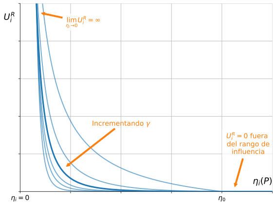Análisis función de repulsión
Potencial repulsivo
- Superficies equipotenciales siguen la forma del obstáculo
- Fuerzas repulsivas son ortogonales
- Se incrementan a medida que se acercan al obstáculo
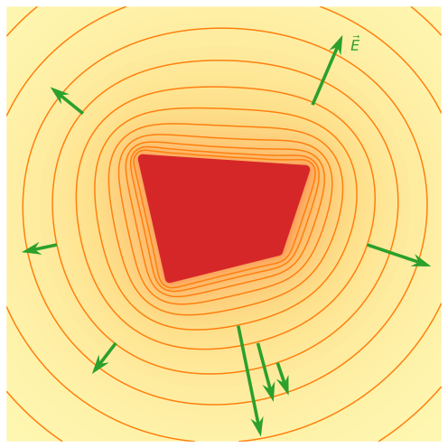
Potencial repulsivo
- La fuerza de repulsión resultante queda definida como
\[ \boldsymbol{F}^{R}_i(\boldsymbol{P}) = - \nabla U^R_{i}(\boldsymbol{P}) = \begin{cases} \frac{k^R_{i}}{\eta_i^2 (\boldsymbol{P})} \left( \frac{1}{\eta_i (\boldsymbol{P})} - \frac{1}{\eta^0_{i}} \right)^{\gamma - 1} \nabla \eta_i (\boldsymbol{P}) &\textrm{si} \; \eta_i(\boldsymbol{P}) \leq \eta^0_{i} \\ 0 &\textrm{si} \; \eta_i(\boldsymbol{P}) > \eta^0_{i} \\ \end{cases} \]
- \(\boldsymbol{F}^{R}_i\) es ortogonal a las superficies equipotenciales pasando a través de \(\boldsymbol{P}\) y los puntos apuntando fuera del obstáculo
- \(\boldsymbol{F}^{R}_i\) es continua gracias a la convexidad de la partición en \(\mathcal{C}^O\)
- Por ppio. de superposición: \[ U_R (\boldsymbol{P}) = \sum_{i=1}^{m} U^R_{i}(\boldsymbol{P}) \]
Potencial total
- Dado el potencial de atracción y el de repulsión, por principio de superposición:
\[ U_T (\boldsymbol{P}) = U_A (\boldsymbol{P}) + U_R (\boldsymbol{P}) \]
- El campo de fuerza total \(\boldsymbol{F}_T\) queda definido como:
\[ \begin{align*} \boldsymbol{F}_T (\boldsymbol{P}) &= - \nabla U_T (\boldsymbol{P}) \\ \boldsymbol{F}_T (\boldsymbol{P}) &= \boldsymbol{F}^A(\boldsymbol{P}) + \sum_{i=1}^{m} \boldsymbol{F}^R_i(\boldsymbol{P}) \end{align*} \]
La fuerza total determinará la dirección y la velocidad de avance
Potencial total
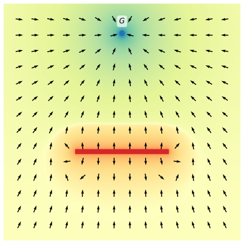
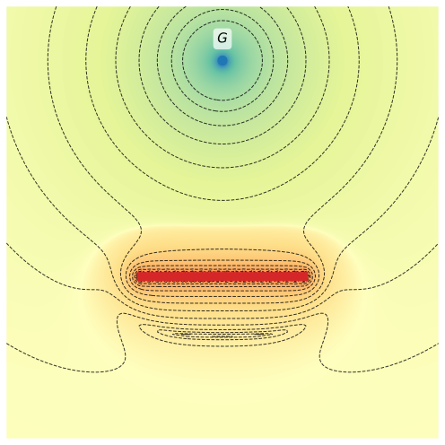
Fuerza de atracción
\[ \boldsymbol{F}^A (\boldsymbol{P}) = - \nabla U_A (\boldsymbol{P}) = - \begin{bmatrix} \frac{\partial U_A (\boldsymbol{P}) }{\partial x} \\ \frac{\partial U_A (\boldsymbol{P}) }{\partial y} \end{bmatrix} \]
El gradiente en dirección \(x\): \[ \frac{\partial U_A (\boldsymbol{P}) }{\partial x} = \begin{cases} \frac{\partial}{\partial x} \left( \tfrac{1}{2} k_a \lVert \boldsymbol{e}(\boldsymbol{P}) \rVert^2 \right) &\textrm{si} \; \lVert \boldsymbol{e}(\boldsymbol{P}) \rVert \leq \rho \\ \frac{\partial}{\partial x} \left( \rho k_a \lVert \boldsymbol{e}(\boldsymbol{P}) \rVert \right) &\textrm{si} \; \lVert \boldsymbol{e}(\boldsymbol{P}) \rVert > \rho \end{cases} \]
El gradiente en dirección \(y\): \[ \frac{\partial U_A (\boldsymbol{P}) }{\partial y} = \begin{cases} \frac{\partial}{\partial y} \left( \tfrac{1}{2} k_a \lVert \boldsymbol{e}(\boldsymbol{P}) \rVert^2 \right) &\textrm{si} \; \lVert \boldsymbol{e}(\boldsymbol{P}) \rVert \leq \rho \\ \frac{\partial}{\partial y} \left( \rho k_a \lVert \boldsymbol{e}(\boldsymbol{P}) \rVert \right) &\textrm{si} \; \lVert \boldsymbol{e}(\boldsymbol{P}) \rVert > \rho \end{cases} \]
Fuerza de atracción
- El gradiente de la función \(\tfrac{1}{2} k_a \lVert \boldsymbol{e}(\boldsymbol{P}) \rVert^2\) con respecto a \(x\):
\[ \frac{\partial}{\partial x} \left( \tfrac{1}{2} k_a \lVert \boldsymbol{e}(\boldsymbol{P}) \rVert^2 \right) = \tfrac{1}{2} k_a \frac{\partial}{\partial x} \left( {e_x}^2 + {e_y}^2 \right) = \tfrac{1}{2} k_a \left( 2 e_x \right) = k_a e_x \]
- El gradiente de la función \(\rho k_a \lVert \boldsymbol{e}(\boldsymbol{P}) \rVert\) con respecto a \(x\):
\[ \begin{align} \frac{\partial}{\partial x} \left( \rho k_a \lVert \boldsymbol{e}(\boldsymbol{P}) \rVert \right) &= \rho k_a \frac{\partial}{\partial x} \left( \sqrt{{e_x}^2 + {e_y}^2} \right) \\ &= \rho k_a \frac{1}{2 \sqrt{{e_x}^2 + {e_y}^2} } \frac{\partial}{\partial x} \left( {e_x}^2 + {e_y}^2 \right) =\\ &= \rho k_a \frac{1}{2 \sqrt{{e_x}^2 + {e_y}^2} } \left( 2 e_x \right) = \rho k_a \frac{e_x}{\lVert \boldsymbol{e} \rVert} \end{align} \]
Fuerza de atracción
- Reemplazando en el gradiente en dirección \(x\):
\[ \frac{\partial U_A (\boldsymbol{P}) }{\partial x} = \begin{cases} k_a e_x &\textrm{si} \; \lVert \boldsymbol{e}(\boldsymbol{P}) \rVert \leq \rho \\ \rho k_a \frac{e_x}{\lVert \boldsymbol{e} \rVert} &\textrm{si} \; \lVert \boldsymbol{e}(\boldsymbol{P}) \rVert > \rho \end{cases} \]
- Lo mismo para el gradiente en dirección \(y\):
\[ \frac{\partial U_A (\boldsymbol{P}) }{\partial y} = \begin{cases} k_a e_y &\textrm{si} \; \lVert \boldsymbol{e}(\boldsymbol{P}) \rVert \leq \rho \\ \rho k_a \frac{e_y}{\lVert \boldsymbol{e} \rVert} &\textrm{si} \; \lVert \boldsymbol{e}(\boldsymbol{P}) \rVert > \rho \end{cases} \]
Fuerza de atracción
- Con ambos resultados
\[ \boldsymbol{F}^A = - \nabla U_A = \begin{cases} - k_a \begin{bmatrix} e_y \\ e_x \end{bmatrix} &\textrm{si} \; \lVert \boldsymbol{e}(\boldsymbol{P}) \rVert \leq \rho \\ - \rho k_a \frac{1}{\lVert \boldsymbol{e} \rVert} \begin{bmatrix} e_y \\ e_x \end{bmatrix} &\textrm{si} \; \lVert \boldsymbol{e}(\boldsymbol{P}) \rVert > \rho \end{cases} \]
- Reemplazando \(\boldsymbol{e}(\boldsymbol{P}) = \boldsymbol{P} - \boldsymbol{G}\):
\[ \boldsymbol{F}^A = - \nabla U_A = \begin{cases} - k_a \begin{bmatrix} x_\boldsymbol{P} - x_\boldsymbol{G} \\ y_\boldsymbol{P} - y_\boldsymbol{G} \\ \end{bmatrix} &\textrm{si} \; \lVert \boldsymbol{P} - \boldsymbol{G} \rVert \leq \rho \\ - \rho k_a \frac{1}{\lVert \boldsymbol{P} - \boldsymbol{G} \rVert} \begin{bmatrix} x_\boldsymbol{P} - x_\boldsymbol{G} \\ y_\boldsymbol{P} - y_\boldsymbol{G} \\ \end{bmatrix} &\textrm{si} \; \lVert \boldsymbol{P} - \boldsymbol{G} \rVert > \rho \end{cases} \]
Fuerzas de repulsión
- Se definen los siguientes parámetros para la función potencial de repulsión:
- Exponente \(\gamma = 2\)
- Un valor constante para \(k^R_{i} = k_R\)
- Un valor constante para \(\eta^0_{i} = \eta_0\)
\[ \boldsymbol{F}^{R}_i(\boldsymbol{P}) = - \nabla U^R_{i}(\boldsymbol{P}) = \begin{cases} \frac{k_R}{\eta_i^2 (\boldsymbol{P})} \left( \frac{1}{\eta_i (\boldsymbol{P})} - \frac{1}{\eta_0} \right) \nabla \eta_i (\boldsymbol{P}) &\textrm{si} \; \eta_i(\boldsymbol{P}) \leq \eta_0 \\ 0 &\textrm{si} \; \eta_i(\boldsymbol{P}) > \eta_0 \\ \end{cases} \]
- Resta obtener la expresión de \(\nabla \eta_i (\boldsymbol{P})\)
Fuerzas de repulsión
- Sea \(\eta_i (\boldsymbol{P})\) el despeje entre el robot en \(\boldsymbol{P}\) y el punto más cercano \(\boldsymbol{O}_i\) del obstáculo \(\mathcal{C}_i\):
\[ \eta_i (\boldsymbol{P}) = \min_{\boldsymbol{O}_i \in \mathcal{C}_i} \lVert \boldsymbol{P} - \boldsymbol{O}_i \rVert = \sqrt{(x_\boldsymbol{P} - x_{\boldsymbol{O}_i})^2 + (y_\boldsymbol{P} - y_{\boldsymbol{O}_i})^2} \]
- Por lo tanto:
\[ \begin{align*} \frac{\partial \eta_i (\boldsymbol{P}) }{\partial x} = \frac{\partial}{\partial x} \left( \sqrt{(x_\boldsymbol{P} - x_{\boldsymbol{O}_i})^2 + (y_\boldsymbol{P} - y_{\boldsymbol{O}_i})^2} \right) &= %\frac{(x_\boldsymbol{P} - x_{\boldsymbol{O}_i})}{\sqrt{(x_\boldsymbol{P} - x_{\boldsymbol{O}_i})^2 + (y_\boldsymbol{P} - y_{\boldsymbol{O}_i})^2}} = \frac{(x_\boldsymbol{P} - x_{\boldsymbol{O}_i})}{\eta_i (\boldsymbol{P})} \\ \frac{\partial \eta_i (\boldsymbol{P}) }{\partial y} = \frac{\partial}{\partial y} \left( \sqrt{(x_\boldsymbol{P} - x_{\boldsymbol{O}_i})^2 + (y_\boldsymbol{P} - y_{\boldsymbol{O}_i})^2} \right) &= %\frac{(y_\boldsymbol{P} - y_{\boldsymbol{O}_i})}{\sqrt{(x_\boldsymbol{P} - x_{\boldsymbol{O}_i})^2 + (y_\boldsymbol{P} - y_{\boldsymbol{O}_i})^2}} = \frac{(y_\boldsymbol{P} - y_{\boldsymbol{O}_i})}{\eta_i (\boldsymbol{P})} \end{align*} \]
Fuerzas de repulsión
- Queda definido
\[ \nabla \eta_i (\boldsymbol{P}) = \begin{bmatrix} \frac{\partial \eta_i (\boldsymbol{P}) }{\partial x} \\ \frac{\partial \eta_i (\boldsymbol{P}) }{\partial y} \end{bmatrix} = \frac{1}{\eta_i (\boldsymbol{P})} \begin{bmatrix} x_\boldsymbol{P} - x_{\boldsymbol{O}_i} \\ y_\boldsymbol{P} - y_{\boldsymbol{O}_i} \end{bmatrix} \]
- Reemplazando en la expresión de las fuerzas repulsivas \(\boldsymbol{F}^{R}_i(\boldsymbol{P})\)
\[ \boldsymbol{F}^{R}_i(\boldsymbol{P}) = - \nabla U^R_{i}(\boldsymbol{P}) = \begin{cases} \frac{k_R}{\eta_i^3 (\boldsymbol{P})} \left( \frac{1}{\eta_i (\boldsymbol{P})} - \frac{1}{\eta_0} \right) \begin{bmatrix} x_\boldsymbol{P} - x_{\boldsymbol{O}_i} \\ y_\boldsymbol{P} - y_{\boldsymbol{O}_i} \end{bmatrix} &\textrm{si} \; \eta_i(\boldsymbol{P}) \leq \eta_0 \\ 0 &\textrm{si} \; \eta_i(\boldsymbol{P}) > \eta_0 \\ \end{cases} \]
Fuerza total
- El campo de fuerza total \(\boldsymbol{F}_T\) queda definido como:
\[ \boldsymbol{F}_T = \boldsymbol{F}^A + \sum_{i=1}^{m} \boldsymbol{F}^R_i \]
donde:
\[ \begin{align*} \boldsymbol{F}^A &= \begin{cases} - k_a \left( \boldsymbol{P} - \boldsymbol{G} \right) &\textrm{si} \; \lVert \boldsymbol{P} - \boldsymbol{G} \rVert \leq \rho \\ - \rho k_a \frac{\boldsymbol{P} - \boldsymbol{G}}{\lVert \boldsymbol{P} - \boldsymbol{G} \rVert} &\textrm{si} \; \lVert \boldsymbol{P} - \boldsymbol{G} \rVert > \rho \end{cases}\\[2em] \boldsymbol{F}^{R}_i &= \begin{cases} \frac{k_R}{\lVert \boldsymbol{P} - \boldsymbol{O}_i \rVert^3} \left( \frac{1}{\lVert \boldsymbol{P} - \boldsymbol{O}_i \rVert} - \frac{1}{\eta_0} \right) \left( \boldsymbol{P} - \boldsymbol{O}_i \right) &\textrm{si} \; \lVert \boldsymbol{P} - \boldsymbol{O}_i \rVert \leq \eta_0 \\ 0 &\textrm{si} \; \lVert \boldsymbol{P} - \boldsymbol{O}_i \rVert > \eta_0 \\ \end{cases} \end{align*} \]
Diseño del controlador
- Se deben diseñar dos señales de control \(\textcolor{ForestGreen}{\nu(t)}\) y \(\textcolor{Orange}{\omega(t)}\), que lleven el robot desde la posición actual a la posición objetivo
- Debido a las restricciones no-holonómicas la resultante \(\boldsymbol{F}_T\) no puede imponerse directamente
Diseño del controlador
- El modelo cinemático se puede expresar como \(\boldsymbol{\dot{P}} = \boldsymbol{\mathcal{g}}(\boldsymbol{P}) \boldsymbol{u}\)
\[ \underbrace{ \sideset{^I}{}{ \begin{bmatrix} \dot{x} \\ \dot{y} \\ \dot{\theta} \end{bmatrix}}}_{\boldsymbol{\dot{P}}} = \underbrace{ \begin{bmatrix} \cos{\theta} & 0\\ \sin{\theta} & 0\\ 0 & 1 \end{bmatrix}}_{\boldsymbol{g}(\boldsymbol{P})} \underbrace{ \begin{bmatrix} \nu\\ \omega \end{bmatrix}}_{\boldsymbol{u}} \]
- Dado que \(\boldsymbol{g}_{n \times m}\) es rectangular con \(n > m\), es imposible calcular \(\boldsymbol{u}\) para un \(\boldsymbol{\dot{P}}\) deseado
Diseño del controlador
Solución: obtener las velocidades factibles mediante una pseudoinversión
- Se propone utilizar una solución de mínimos cuadrados
\[ \boldsymbol{u} = \boldsymbol{\tilde{g}}(\boldsymbol{P}) \, \boldsymbol{\dot{P}} = \boldsymbol{\tilde{g}}(\boldsymbol{P}) \, \boldsymbol{F}_T \]
donde
\[ \boldsymbol{\tilde{g}}(\boldsymbol{P}) = \left( \boldsymbol{g}^\top(\boldsymbol{P}) \boldsymbol{g}(\boldsymbol{P}) \right)^{-1} \boldsymbol{g}^\top(\boldsymbol{P}) \]
\[ \boldsymbol{g}(\boldsymbol{P}) = \begin{bmatrix} \cos{\theta} & 0\\ \sin{\theta} & 0\\ 0 & 1 \end{bmatrix} \quad \to \quad \boldsymbol{\tilde{g}}(\boldsymbol{P}) = \begin{bmatrix} \cos{\theta} & \sin{\theta} & 0\\ 0 & 0 & 1 \end{bmatrix} \]
Diseño del controlador
Solución: obtener las velocidades factibles mediante una pseudoinversión
\[ \boldsymbol{g} = \begin{bmatrix} \cos{\theta} & 0\\ \sin{\theta} & 0\\ 0 & 1 \end{bmatrix} \quad \boldsymbol{g}^\top = \begin{bmatrix} \cos{\theta} & \sin{\theta} & 0\\ 0 & 0 & 1 \end{bmatrix} \]
\[ \boldsymbol{g}^\top \, \boldsymbol{g} = \begin{bmatrix} \cos{\theta} & \sin{\theta} & 0\\ 0 & 0 & 1 \end{bmatrix} \begin{bmatrix} \cos{\theta} & 0\\ \sin{\theta} & 0\\ 0 & 1 \end{bmatrix} = \begin{bmatrix} \cos^2{\theta} + \sin^2{\theta} & 0\\ 0 & 1 \end{bmatrix} = \begin{bmatrix} 1 & 0\\ 0 & 1 \end{bmatrix} = \mathbb{I} \]
\[ \left( \boldsymbol{g}^\top \, \boldsymbol{g} \right)^{-1} = \mathbb{I}^{-1} = \mathbb{I} \]
\[ \left( \boldsymbol{g}^\top \, \boldsymbol{g} \right)^{-1} \boldsymbol{g}^\top = \mathbb{I} \, \boldsymbol{g}^\top = \boldsymbol{g}^\top = \begin{bmatrix} \cos{\theta} & \sin{\theta} & 0\\ 0 & 0 & 1 \end{bmatrix} \]
Diseño del controlador
- Reemplazando
\[ \boldsymbol{u} = \boldsymbol{\tilde{g}}(\boldsymbol{P}) \, \boldsymbol{F}_T = \begin{bmatrix} \cos{\theta} & \sin{\theta} & 0\\ 0 & 0 & 1 \end{bmatrix} \, \boldsymbol{F}_T \]
- Por lo tanto, la solución por mínimos cuadrados para una fuerza artificial \(\boldsymbol{F}_T = \left[{F_T}_x , {F_T}_y , {F_T}_\theta \right]^\top\) es
\[ \boldsymbol{u} \begin{cases} \nu = {F_T}_x \cos{\theta} + {F_T}_y \sin{\theta} \\ \omega = {F_T}_\theta \end{cases} \]
- Se puede interpretar \(\nu\) como la proyección de la fuerza \(\boldsymbol{F}_T\) sobre el eje del robot \(\boldsymbol{X_R}\)
Diseño del controlador
- El campo potencial no produce una “componente giratoria” \({F_T}_\theta\)
- Este grado de libertad puede utilizarse para forzar al robot a alinearse con el campo vectorial \(\boldsymbol{F}_T\)
\[ \omega = {F_T}_\theta = k_\theta (\theta_{\boldsymbol{F}_T} - \theta) %\quad \textrm{con} \quad \theta_{\boldsymbol{F}_T} = \arctan 2 \left( {F_T}_y , {F_T}_x \right) \]
donde
\[ \theta_{\boldsymbol{F}_T} = \arctan 2 \left( {F_T}_y , {F_T}_x \right) \]
Diseño del controlador
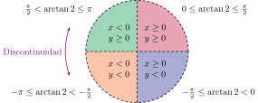Valores de la función \(\arctan2(x, y)\): discontinuidad en \(\pm \pi\)
Diseño del controlador
Casos particulares de \(\theta\) y el ángulo de \(\boldsymbol{F}_T\)
- Caso A:
\[ \begin{gather*} \tfrac{\pi}{2} < \theta \leq \pi \\ -\pi \leq \theta_{\boldsymbol{F}_T} < -\tfrac{\pi}{2} \end{gather*} \]
\[ (\theta_{\boldsymbol{F}_T} - \theta) \in \left[ -2 \pi ; -\pi \right) \to \omega \ngtr 0 \]
Por lo tanto se redefine \[ \omega = k_\theta ((\theta_{\boldsymbol{F}_T} + 2 \pi) - \theta) \]
para \(\boldsymbol{F}_T\) en el 3er cuadrante y \(\boldsymbol{x}_R\) en el 2do
Diseño del controlador
Casos particulares de \(\theta\) y el ángulo de \(\boldsymbol{F}_T\)
- Caso B:
\[ \begin{gather*} -\pi \leq \theta < -\tfrac{\pi}{2}\\ \tfrac{\pi}{2} < \theta_{\boldsymbol{F}_T} \leq \pi \end{gather*} \]
\[ (\theta_{\boldsymbol{F}_T} - \theta) \in \left[ 2 \pi ; \pi \right) \to \omega \nless 0 \]
Por lo tanto se redefine \[ \omega = k_\theta (\theta_{\boldsymbol{F}_T} - (\theta + 2 \pi)) \]
para \(\boldsymbol{F}_T\) en el 2do cuadrante y \(\boldsymbol{x}_R\) en el 3er
Implementación
- Implementación on-line
- Generar un potencial repulsivo solo para obstáculos percibidos
\[ \eta_0 < \textcolor{ForestGreen}{L} \]
- Para calcular la fuerza \(\boldsymbol{F}^{R}_i\) solo es necesario conocer el despeje \(\eta_i\) con respecto al obstáculo \(i\)
Mediciones del LIDAR
- Sea la posición del robot \(\textcolor{Maroon}{\boldsymbol{r_P}}\) y su orientación \(\textcolor{Orange}{\theta}\)
- Dadas las mediciones del LIDAR \(\textcolor{Plum}{(d, \alpha)}\), es posible calcular la coordenada de \(\textcolor{Plum}{\boldsymbol{O}}\) en el marco inercial \(\textcolor{Blue}{\left\{\boldsymbol{x}_I, \boldsymbol{y}_I \right\}}\)
\[ \begin{align*} \textcolor{Plum}{x_\boldsymbol{O}} &= \textcolor{Maroon}{x_\boldsymbol{P}} + \textcolor{Plum}{d} \cdot \cos{(\textcolor{ForestGreen}{\gamma})}\\ \textcolor{Plum}{y_\boldsymbol{O}} &= \textcolor{Maroon}{y_\boldsymbol{P}} + \textcolor{Plum}{d} \cdot \sin{(\textcolor{ForestGreen}{\gamma})} \end{align*} \]
donde \[ \textcolor{ForestGreen}{\gamma} = \textcolor{Orange}{\theta} + \textcolor{Plum}{\alpha} \]
Mediciones del LIDAR
Para el caso de las fuerzas repulsivas el valor de \(\eta_i = \lVert \textcolor{Maroon}{\boldsymbol{P}} - \textcolor{Plum}{\boldsymbol{O}_i} \rVert\) se corresponde directamente con el valor medido por el lidar \(\textcolor{Plum}{d}\)
Solo se debe calcular la posición en \(\textcolor{Blue}{\boldsymbol{x}_I}\) e \(\textcolor{Blue}{\boldsymbol{y}_I}\) para obtener el vector
\[ \overrightarrow{\textcolor{Maroon}{\boldsymbol{P}}\textcolor{Plum}{\boldsymbol{O}_i}} = \textcolor{Maroon}{\boldsymbol{P}} - \textcolor{Plum}{\boldsymbol{O}_i} \]
Mediciones del LIDAR
- El análisis se realizó simplificando el robot a un punto en el espacio
- Para la implementación se debe tener en cuenta las dimensiones reales del robot
- Modelo simple: Asumir una forma circular con radio \(\kappa\) que abarque toda el perímetro
Los campos potenciales de repulsión se pueden obtener simplemente expandiendo la silueta del obstáculo \(\kappa\), lo mismo que disminuir el despeje \(\eta_i = d_i - \kappa\)
Problemas de los campos potenciales
Se pueden identificar 4 problemas significativos
- No permite el paso entre obstáculos poco espaciados
- Oscilaciones producidas por obstáculos
- Oscilaciones en pasajes angostos
- “Trampas” en mínimos locales
Obstáculos poco espaciados
- Al intentar pasar a través de dos obstáculos cercanos (Ej.: el marco de una puerta) las fuerzas repulsivas combinadas apuntan hacia afuera de la abertura
- Dependiendo de la magnitud relativa de la fuerza de atracción \(\boldsymbol{F}^A\), el robot la atravesará o se alejará
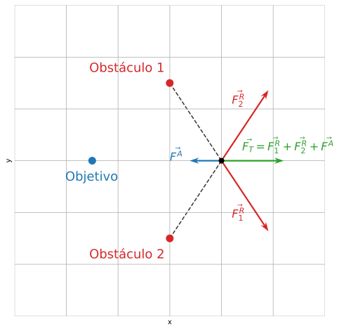

Oscilaciones debido a obstáculos
- Existen casos donde el robot puede entrar en un comportamiento oscilatorio donde se acerca y se aleja de los obstáculos de forma inestable
Solución: Filtro pasa bajo para el comando de velocidad angular

Oscilaciones en pasajes angostos
- Un caso particular del anterior
- El robot se ve afectado por fuerzas repulsivas opuestas de forma simultánea
Solución: dammping o amortiguación para el comando de velocidad

Mínimos locales
Si el robot entra en un mínimo local \(\boldsymbol{P}_m\) de \(U_T\) se detendrá
\[ \boldsymbol{F}_T (\boldsymbol{P}_m) = -\nabla U_T(\boldsymbol{P}_m) = 0 \]

Mínimos locales
Solución: Campos rotacionales
Reemplazar o combinar la fuerza de repulsión por una que fuerce el robot a rodear el obstáculo
Campos rotacionales:
\[ \boldsymbol{F}^V_i(\boldsymbol{P}) = \pm \nabla \times U^R_{i}(\boldsymbol{P}) = \pm \begin{bmatrix} \frac{\partial U^R_{i}}{\partial y} \\ -\frac{\partial U^R_{i}}{\partial x} \end{bmatrix} \]
- El vector resultante es tangente a la superficie equipotencial
Mínimos locales
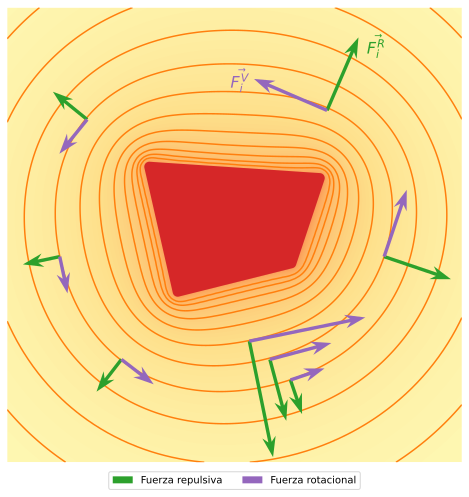
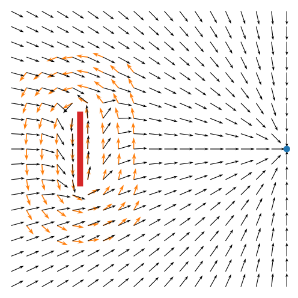
Resumen
En resumen
- El guiado del robot se realizará a partir de la resultante de la suma de 2 fuerzas
- Una de atracción hacia el punto objetivo
- Una de repulsión de los obstáculos
- Mediante campos potenciales se construyeron las expresiones para ambas fuerzas
Resumen
En resumen
- La expresión para la fuerza de atracción \(\boldsymbol{F}^A\) tiene dos parámetros de ajuste:
- \(k_a\) para controlar la intensidad
- \(\rho\) para definir el límite de linealidad
- La expresión para la fuerza de repulsión \(\boldsymbol{F}^{R}_i\) tiene dos parámetros de ajuste:
- \(k_R\) para controlar la intensidad
- \(\eta_0\) para definir el límite de influencia de los obstáculos
Resumen
En resumen
- Para las expresiones de velocidad lineal \(\nu\) y velocidad angular \(\omega\) se optó por utilizar mínimos cuadrados
- La expresión de \(\nu\) se puede interpretar como la proyección de \(\boldsymbol{F}_T\) sobre el eje del robot \(\boldsymbol{X_R}\)
- La expresión de \(\omega\) se utilizó para forzar al robot a alinearse con el vector \(\boldsymbol{F}_T\)
- Al calcular el ángulo de \(\boldsymbol{F}_T\) como \(\arctan 2 \left( {F_T}_y , {F_T}_x \right)\) hay que considerar ciertos casos especiales
Resumen
En resumen
- Utilizando un sensor LIDAR los cáculos de las fuerzas de repulsión \(\boldsymbol{F}^{R}_i\) se simplifican
- Generar fuerzas repulsivas solo para obstáculos percibidos (\(\eta_i < L\))
- Tener en cuenta la forma del robot al calcular los despejes \(\eta_i\)
Laboratorio
Point-follower con campo potencial artificial
Robótica - TUAR - FICH - UNL